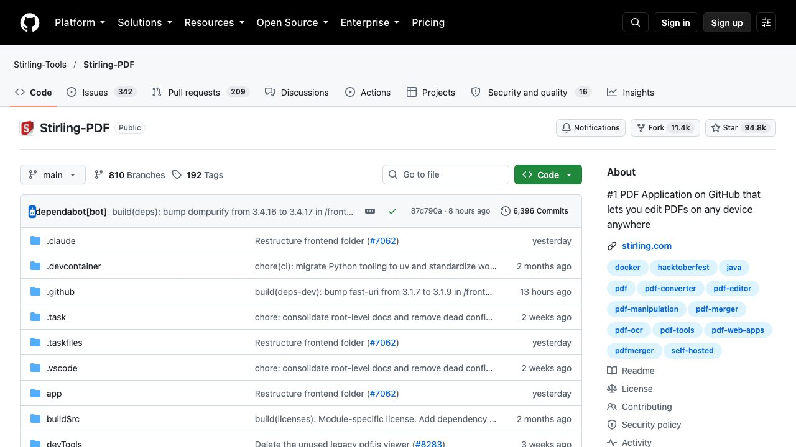

Los programas, de un vistazo
- net-merge: Suma tu wifi, tu cable y los datos del móvil para usar todas tus conexiones a la vez.
- Win11Debloat: Quita las apps preinstaladas y el rastreo de Windows.
- Stirling PDF: Más de 50 herramientas de PDF en un solo programa.
- Immich: Tus fotos y vídeos en tu propio servidor, como un Google Fotos tuyo.
- SpeakMore: Dicta con la voz en Mac y Windows.
- AirLLM: Modelos de IA enormes en una tarjeta gráfica pequeña.
Todos son gratuitos y de código abierto, pero ninguno es magia: cada ficha termina con lo honesto, es decir, lo que cuesta, lo que no hace y lo que conviene revisar antes de instalarlo.
net-merge: usa tu wifi, tu cable y los datos del móvil a la vez
Muchas casas tienen wifi, un cable y un móvil con datos, y el ordenador solo usa una de las conexiones. net-merge es un programa gratuito y de código abierto (licencia MIT) para Windows, macOS y Linux que reparte tu tráfico entre todas. No necesita cuenta, servidor ni VPN.
Cómo funciona y qué prueba da el autor
- Cada conexión nueva que abre una app se asigna a uno de tus enlaces. Si la app abre muchas conexiones, se reparten entre todos.
- Los enlaces más rápidos reciben más conexiones, y uno que se queda sin internet no recibe ninguna hasta que vuelve.
- En su prueba, con wifi, un móvil Android por USB y un iPhone como punto de acceso, 9 descargas a la vez llegaron a 232-303 Mbit/s. La mejor conexión sola daba unos 121 Mbit/s.
Para qué sirve
- Va bien con descargas de juegos y actualizaciones, navegadores, subidas a la nube, gestores de descargas y torrents.
- No acelera un único archivo que baje por una sola conexión: una conexión siempre usa un solo enlace.
- Funciona con cualquier app, TCP y UDP, IPv4 e IPv6, sin que configures ningún proxy.
Cómo instalarlo
- Entra en su repositorio y abre el apartado «Install» del README.
- Elige tu sistema (Windows, macOS o Linux) y sigue sus pasos. Hay instaladores y comandos para cada uno.
- Cuando aparezca su icono en la barra de menús o de tareas, añade una segunda conexión siguiendo «Add a second connection».
Lo honesto: las cifras son de la prueba del propio autor, no nuestras: tu mejora dependerá de tus conexiones. Si sumas el móvil, gastas sus datos. El programa instala un componente de red en tu ordenador, así que conviene leer el script de instalación antes de ejecutarlo. Según su README, si net-merge falla, tu internet sigue funcionando.
Repositorio: github.com/rohit267/net-merge · Verificado el 19 de octubre de 2026 en el README del autor.
Win11Debloat: quita las apps y el rastreo que Windows trae de fábrica
Windows llega con apps que nadie pidió, sugerencias en el menú de inicio y la telemetría encendida. Win11Debloat es un script de PowerShell que las quita en Windows 10 y 11. No se instala nada: se ejecuta, marcas lo que quieres fuera y termina.
Qué hace
- Quita las apps preinstaladas que elijas.
- Desactiva la telemetría, los datos de diagnóstico, el historial de actividad y la publicidad personalizada.
- Quita consejos y anuncios del sistema, de la pantalla de bloqueo y de Edge.
- Permite desactivar Copilot, Windows Recall y Click to Do.
Lo honesto: solo sirve para Windows, y el propio autor pide que lo uses bajo tu responsabilidad. El consejo que añadimos nosotros, y no es suyo: crea un punto de restauración antes y no ejecutes nunca un script que no hayas leído.
Repositorio: github.com/Raphire/Win11Debloat · Verificado el 20 de octubre de 2026 en el README del autor: licencia MIT y unas 60.000 estrellas en GitHub. Ficha completa: cómo proteger tus datos cuando usas IA.
Stirling PDF: más de 50 herramientas para PDF, en tu ordenador
Casi todo lo que se hace con un PDF acaba en una web que te pide subir el archivo. Stirling PDF reúne más de cincuenta de esas herramientas en un solo programa que puedes ejecutar en tu propio equipo, así que el documento no sale de casa. Es el paso previo típico antes de pasarle un PDF a una IA.
Qué hace
- Une, divide, comprime, convierte, firma y edita.
- Tacha datos y aplica OCR para convertir un escaneado en texto.
- Se usa como app de escritorio, en el navegador o en tu propio servidor con Docker.
- La interfaz está traducida a más de cuarenta idiomas.
Lo honesto: es open-core: el núcleo es libre, pero las funciones de empresa (inicio de sesión único, auditoría) son de pago. Su documentación no detalla el comportamiento de red herramienta por herramienta, así que si manejas contratos o nóminas, instálalo tú y compruébalo en tu equipo.
Repositorio: github.com/Stirling-Tools/Stirling-PDF · Verificado el 20 de octubre de 2026 en el README del proyecto: más de 50 herramientas y unas 95.000 estrellas en GitHub. Ficha completa: analizar imágenes y PDFs con IA.
Immich: tus fotos en tu propio servidor, no en el de otro
Tus fotos cuentan dónde vives, con quién y a qué hora. Immich es un gestor de fotos y vídeos que corre en un equipo tuyo y hace casi lo que hace Google Fotos: copia automática desde el móvil, búsqueda por caras y lugares, álbumes compartidos y recuerdos.
Qué hace
- Copia automática y en segundo plano desde iPhone y Android, eligiendo qué álbumes subir.
- Búsqueda por metadatos, objetos, caras y descripción de lo que aparece.
- Álbumes compartidos, mapa global y recuerdos de «hace X años».
- Soporta Live Photos y Motion Photos.
Lo honesto: no es un servicio, es un servidor: necesitas un equipo encendido (un mini PC o un NAS), Docker y mantenimiento. El propio proyecto insiste en la regla 3-2-1 de copias —tres copias, en dos soportes y una fuera de casa—, así que no lo conviertas en el único sitio donde viven tus fotos.
Repositorio: github.com/immich-app/immich · Verificado el 20 de octubre de 2026 en el repositorio: licencia AGPL-3.0 y unas 117.000 estrellas en GitHub. Ficha completa: cómo proteger tus datos cuando usas IA.
SpeakMore: dicta en vez de teclear, gratis y sin cuenta
Hablar es más rápido que escribir, pero el dictado del sistema deja el texto sin puntuar y con todas las muletillas. SpeakMore es una app de dictado para macOS y Windows: pulsas un atajo, hablas, lo vuelves a pulsar y el texto aparece donde tengas el cursor, ya limpio.
Qué hace
- Quita muletillas, repeticiones y rectificaciones, y pone la puntuación.
- Separa los textos largos en párrafos.
- Tiene un modo privado que transcribe con un modelo en tu propio equipo y no sube nada.
- El modo local no pide cuenta ni clave de API.
Lo honesto: es un proyecto muy pequeño —poco más de un centenar de estrellas en GitHub, frente a las decenas de miles del resto de esta lista—, y su README está en chino, con una versión en inglés. No hemos probado el dictado en español: pruébalo con tu voz antes de confiarle trabajo de verdad.
Repositorio: github.com/zephyr4123/speakmore · Verificado el 20 de octubre de 2026 en el README del autor: licencia MIT, macOS 12 o superior y Windows 10/11 de 64 bits. Ficha completa: clonar voz, transcribir y generar audio con IA.
AirLLM: modelos enormes en una tarjeta gráfica pequeña
Un modelo de 70.000 millones de parámetros no cabe entero en una tarjeta de 4 GB. AirLLM no lo carga entero: ejecuta una capa cada vez y la descarga al acabar, así que la memoria que necesitas depende del tamaño de una capa y no del modelo completo. Su README afirma que así corre un modelo de 70B en una sola tarjeta de 4 GB, sin cuantizar, destilar ni recortar nada.
Qué hace
- Se instala con
pip install airllmy necesita Python y una tarjeta compatible. - Corre en tu equipo: no pagas por mensaje ni necesitas una API.
- Va más lento, porque lee las capas del disco en cada paso.
- Necesitas bastante espacio libre en disco para guardar el modelo.
Lo honesto: los 4 GB son memoria de pico, no velocidad: su README publica el consumo de memoria pero no una tabla de palabras por segundo, así que lo que cambias es memoria por tiempo. Para el uso diario, un modelo más pequeño que quepa entero en la tarjeta casi siempre va mejor. Nosotros no lo hemos medido en un equipo concreto.
Repositorio: github.com/lyogavin/airllm · Verificado el 20 de octubre de 2026 en el repositorio: licencia Apache-2.0 y unas 39.000 estrellas en GitHub. Ficha completa: usar IA en tu propio ordenador.
También gratis y para programar: freellmapi con Claude Code.